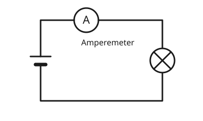

Das Amperemeter
Mit einem KI-Tutor lernen
Ein KI-Tutor erklärt dir diese Seite und hilft dir bei den Übungen. Wähl deinen Assistenten:
Mit Claude öffnen Mit ChatGPT öffnen Mit Mistral Vibe öffnen
Du nutzt dein eigenes Konto beim Anbieter. Der Assistent ist kein Angebot von lernapps.net: lernapps liefert nur Inhalte und Übungen. Die Wahl gilt für alle Seiten, nur auf diesem Gerät.
Wie misst man den Strom?
Die Stromstärke siehst du nicht. Du brauchst ein Messgerät, das den Strom zählt, der durch es hindurchfließt. Dieses Gerät heißt Amperemeter. Wo du es anschließt, entscheidet, ob du richtig misst.
Das Amperemeter in den Stromweg einbauen
- Amperemeter
Ein Amperemeter misst die Stromstärke. Man baut es in den Stromweg ein, sodass der ganze Strom durch das Gerät fließt.
Das Amperemeter misst den Strom, der durch es hindurchfließt. Deshalb muss der Strom, den du messen willst, durch das Gerät laufen. Du öffnest dafür den Stromkreis an einer Stelle und setzt das Amperemeter in die Lücke: Es liegt in Reihe mit dem Verbraucher. Der Kreis bleibt geschlossen, nur jetzt läuft der Strom durch das Gerät.

Das Amperemeter liegt im Stromweg. Der ganze Strom fließt durch das Gerät.
Quelle: eigene Zeichnung. Lizenz: CC-BY-4.0.Niemals parallel
Schließt du ein Amperemeter parallel zur Lampe oder zur Batterie an, fließt der Strom fast nur durch das Gerät. Es zeigt dann einen viel zu großen Wert und kann kaputtgehen. Du schaltest das Amperemeter immer in Reihe.
Ablesen: Auf der Skala steht, wie viel Ampere zwischen zwei Strichen liegen. Schau auf die Beschriftung der großen Striche, zähle die kleinen Striche dazwischen und lies den Zeiger senkrecht von oben ab. Die Einheit steht auf dem Gerät. Ein Messbereich in mA zeigt Milliampere.
Eine Skala ablesen
Zeiger zwischen den Strichen

Zeigerstand bei einer Skala von 0 bis 1 A.
Quelle: eigene Zeichnung. Lizenz: CC-BY-4.0.Der Zeiger steht auf dem großen Strich zwischen 0,4 und 0,8. Die Beschriftung dort ist 0,6. Die Stromstärke ist also .
Übung
Übung
Lösung
A, in der Leitung, sodass der Strom durch das Gerät fließt. richtige Antwort
Dort liegt das Amperemeter in Reihe mit der Lampe. Es zeigt die Stromstärke der Lampe.
B, parallel zur Lampe.
Dann fließt der Strom um die Lampe herum durch das Gerät. Es misst falsch und kann kaputtgehen.
C, parallel zur Batterie.
Dann verbindest du die beiden Pole der Batterie fast ohne Hindernis. Das ist gefährlich für das Gerät.
Ein Amperemeter gehört in den Stromweg, in Reihe zu dem, was du messen willst.
Mehr dazu:
Übung
Lösung
Richtige Antwort: 0,6 A (erlaubte Abweichung: 0,02 A)
Der Zeiger steht auf dem großen Strich bei 0,6 A.
Mehr dazu:
Übung
Lösung
Richtige Antwort: 350 mA (erlaubte Abweichung: 10 mA)
Der Zeiger steht auf dem kleinen Strich zwischen 300 und 400, also bei 350 mA. Auf dem Gerät steht mA, nicht A.
Mehr dazu:
Übung
Lösung
Richtige Antwort: Die Aussage stimmt.
Nur so fließt der Strom durch das Gerät. Der Kreis bleibt dabei geschlossen, weil das Gerät die Lücke überbrückt.
Mehr dazu:
Übung
Lösung
Nein, in Reihe, sonst fließt der Strom am Gerät vorbei oder zu stark durch es hindurch. richtige Antwort
Das Amperemeter zählt nur den Strom, der durch es fließt. Es gehört in den Stromweg.
Ja, so sieht man den Strom der Lampe am besten.
Parallel angeschlossen, würde ein Amperemeter fast den ganzen Strom an der Lampe vorbei leiten.
Es ist egal, wie man es anschließt.
Der Anschluss entscheidet, ob der Messwert stimmt und ob das Gerät heil bleibt.
Ein Amperemeter wird in Reihe geschaltet, nie parallel.
Mehr dazu: